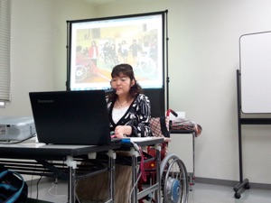
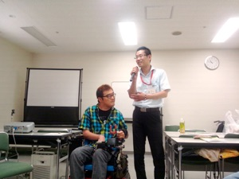
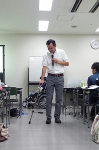
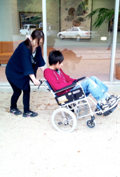

ICHIZスクールの先生に！

弊社実施の事業に、福祉の仕事に従事する人材育成を行う「ICHIZスクール」があります。
ICHIZスクールでは、資格要件を満たしたメイン講師だけでなく、当事者の視点を補足していただく客員講師（実際に介護を受けている方）にも関わって頂き、講座の質を高めたいと考えております。
皆様の要介護者としての経験は、地域の福祉人材の育成にとってかけがえの無い教材であり、そこで育まれた人材及び理念は、すべての人が老いにより経験する不自由に対峙した際に計り知れない恩恵をもたらすと思います。
最新の開講状況は、
https://www.facebook.com/careofficeichiz/?ref=bookmarks
に、載せていきます。
---受講生の声-----------------------------
ガイドヘルパー講習を終えて
６月１・２日、２日間の講習を修了して、この度ガイドヘルパーの資格を取ることができました！！
実は私はまだヘルパー歴３ヶ月の新米ヘルパーで、内容についていけるか心配でしたが、分かりやすく濃い内容の講座であっという間の２日間でした。
一番心に残っているのはＩＣＨＩＺのお客様の「私はこんなヘルパーさんがいい」という講義。
ガイドヘルパーを行う上で、またご利用者と接する上で基本となる大切なことや気付かされたことが沢山ありました。
あぁそうなんだ、そうよね～と感じさせられる事ばかり。
「どんなに親しくなってもプロに徹する、お客様をサポートするのが私たちの役割」基本の基本でしょうが、改めて感じさせられました。
その他にも別のご利用者の先生と一緒に買い物のガイド演習“エアーガイド(笑)”を行ったり、素人の私にもわかり易い目からウロコ！の介護技術講習などなど。一緒に講座を受けた受講生の皆さんと親睦を図ることもでき、いい経験になりました。
ガイドヘルパーとしてご利用者と共に外出をするのはもう少し先でしょうが、お客様をリラックスさせ一緒に楽しめる時間を提供することができるようになれるかな？？と今から期待と不安でいっぱいです。
ＩＣＨＩＺの先生方、ありがとうございました！！自分なりに頑張ってみます。
隈本智子
---他社様養成事業への講師派遣等コラボ企画------
株式会社千歳様 同行援護従業者養成講座（一般・応用）
特定非営利活動法人ふくし邑様 ガイドヘルパー養成講座（全身性）
一般社団法人ウェルネスJAPAN様 介護職員初任者研修
㈱ケア・ライフ・コーポレーション様 同行援護従業者養成講座
合同会社きずな様 同行援護従業者養成講座（一般課程）
あなたの経験は地域の財産！！




